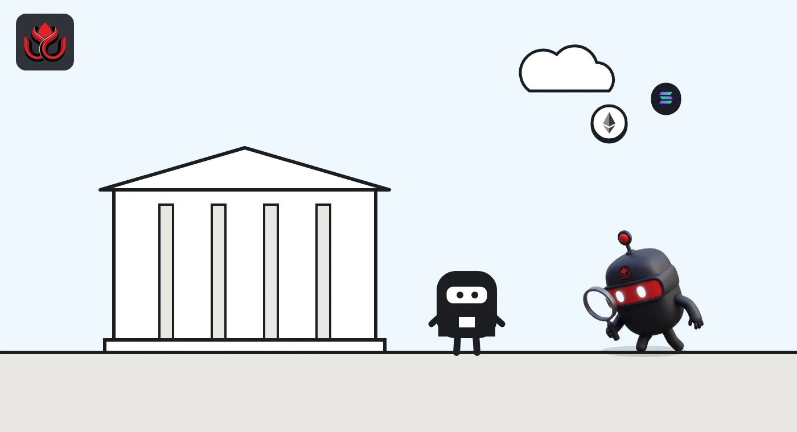
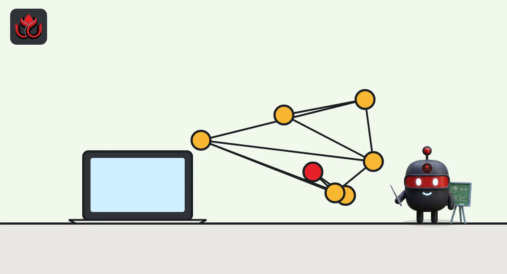

Prediction markets explained: how Kalshi and Polymarket work, and the real risks
A prediction market lets people trade contracts that pay $1 if an event happens and $0 if it does not, so prices read like odds. Kalshi is a CFTC-regulated US exchange; most Polymarket markets settle on chain through the UMA oracle.
Key points
- Each contract pays $1 if the outcome happens and $0 if not. A 70-cent price is read as a 70% chance.
- Kalshi is regulated by the US Commodity Futures Trading Commission and says it handles over 75% of prediction market volume.
- Polymarket resolves most markets through the UMA Optimistic Oracle: about 2 hours if nobody disputes, roughly 4 to 6 days if they do.
- Risks include losing the full stake, unclear rules, slow settlement, legal fights with US states and manipulation.
What is a prediction market?
A prediction market is an exchange where people buy and sell contracts on yes-or-no questions: Will this party win the Senate? Will the Fed raise rates? Will this team win? Each winning contract pays $1 and each losing one pays nothing.
Because the payout is fixed, the price works like a probability. If "Yes" trades at 70 cents, traders as a group are pricing about a 70% chance. Prices move as people trade on news, polls or their own views.
Kalshi's midterms explainer gives a worked example: 100 Yes contracts bought at 40 cents cost $40 before fees. If the event happens, they pay $100, a $60 gain before fees. Sold early at 55 cents, they return $55.
How does Kalshi work?
Kalshi is a US exchange regulated by the Commodity Futures Trading Commission (CFTC), the federal agency for futures markets. Users deposit dollars, pass identity checks and trade event contracts on politics, sports, economics, weather, crypto and more. Kalshi says it rejects anyone under 18, and on October 27, 2026, it set a default $2,500 monthly deposit cap for traders aged 18 to 20.
In its October 29, 2026, funding announcement, Kalshi said it has more than 30 million accounts, over $1 trillion in annualized trading volume and more than 75% of prediction market volume. These are company figures, not audited ones. It now also runs perpetual futures and plans contracts on the S&P 500 and the Dow.
Settlement follows each contract's written rules. For example, Kalshi says its House and Senate control contracts settle using party tests on February 1, 2027, unless an early call applies.
Kalshi also says it is adding trade alerts: a new trader with more than $1,000 who puts more than 25% of it into one trade will be nudged to spread the risk. Users can also exclude themselves from Kalshi nationwide, the company said in its NBA announcement.

How does Polymarket work?
Polymarket runs prediction markets on a blockchain. Traders hold outcome tokens that redeem for $1.00 if they win and nothing if they lose. Its documentation refers to pUSD as the currency for resolution bonds.
The interesting part is how a market decides who won. Polymarket's resolution docs explain that most markets use the UMA Optimistic Oracle, a system where answers are assumed correct unless someone challenges them:
- Anyone can propose the result by posting a bond, typically $750 pUSD.
- A 2-hour challenge period follows. If nobody disputes, the market resolves.
- A challenger can dispute by posting the same bond. If a second proposal is also disputed, there is a 24- to 48-hour debate, then UMA token holders vote over about 48 hours.
- The winning side gets its bond back plus half the loser's. If the answer is unknowable, each token pays $0.50.
Short-term crypto "up or down" markets skip this and settle on Chainlink price averages, per the docs.
Polymarket's UMA resolution steps, maximum length
hours
Source: Polymarket docs, Resolution. Disputed markets take roughly 4 to 6 days in total.
What can you trade on prediction markets?
Elections get the headlines, but they are a small slice. In its October 29 announcement, Kalshi said crypto contracts run at about $140 billion in annualized volume, against more than $8 billion for politics. Commodities passed $100 million in annualized trading fees. Kalshi's perpetual futures, contracts with no expiry date, did $83 billion in volume with more than 500,000 traders since launch.
New types keep arriving. On October 23, Kalshi launched sector KPI markets that settle on Carbon Arc data such as card spending, foot traffic and app downloads. On October 27 it announced a deal with S&P Dow Jones Indices to list S&P 500 and Dow contracts and build indexes from event contracts. Sports are a big draw too, and Kalshi signed a data and integrity deal with the NBA on October 26.
About 500 institutions were active on Kalshi in September, the company said, and firms other than market makers made up about a quarter of volume. Prediction markets are no longer only a retail product.

How are Polymarket and Kalshi different?
- Regulation: Kalshi is a CFTC-regulated exchange with identity checks. Polymarket's main markets run on chain, and it operates a separate US business.
- Money: Kalshi users deposit dollars. Polymarket uses on-chain tokens.
- Who decides the result: Kalshi settles under its rulebook, sometimes with official data, such as NBA data under its October 2026 league deal. Polymarket mostly relies on UMA's challenge and vote system.
- Size: Kalshi claims more than 75% of volume.
Both face state pushback. Polymarket's US arm stopped offering sports contracts in Michigan, as LC Insight reported, and the CFTC has sued states such as Utah over the right to regulate these markets, covered here.
Are prediction markets accurate?
Sometimes, but they are not crystal balls. Prices reflect what traders with money at stake think, and they can be wrong or move on bad information. In October 2026, Kalshi reviewed the effect of Wedgewood, a pollster that admitted its polls were fabricated. Kalshi said one fake poll briefly moved two candidates' prices by 4.5% and 6% in a Wisconsin primary market, while 14 others did not materially move prices.
What are the risks?
- You can lose everything you put into a contract. A losing contract pays $0.
- Rules decide, not headlines. Read how a market resolves before trading. Polymarket can add clarifications after trading starts, though they cannot change a question's basic intent.
- Slow money. Settlement can take days, or months for some election contracts.
- Legal risk. State and federal regulators disagree on who oversees sports and election contracts.
- Platform risk. Polymarket had to halt trading and repay $3.9 million after a vendor script was hacked, as LC Insight reported.
- Insider trading and manipulation. Kalshi says it runs trade surveillance and investigations, and its NBA deal bars league and team staff from trading NBA contracts. Enforcement still depends on catching people.
LC Insight analysis
This section is our reading of the facts above, not a statement of fact.
- We think the biggest open question is legal, not technical. Who regulates sports and election contracts, states or the CFTC, will decide how large these markets can grow in the US.
- Resolution design is where the real risk sits. A $750 bond and a token holder vote work for clear questions, but vague wording leaves room for disputes worth far more than the bond.
- Company volume claims are large and unaudited. Treat them as marketing until regulators or independent data confirm them.
What's next
- Court rulings in CFTC versus state cases
- How fast election contracts settle after November 3, 2026
- New official data deals with sports leagues
Frequently asked questions
Is Kalshi legal in the US?
Kalshi is regulated by the CFTC and open to US adults 18 and older. Some states dispute its sports contracts, and those fights are in court.
How does Polymarket decide who wins?
Most markets use the UMA Optimistic Oracle. Someone proposes the result with a bond, and if nobody disputes within 2 hours, it stands. Disputes can go to a UMA token holder vote.
What happens if a market can't be resolved?
On Polymarket, an unknowable result resolves 50/50, so each token redeems for $0.50, per its docs.
Are prediction market prices probabilities?
They are prices set by traders, often read as rough odds. They are not official forecasts and can be wrong.
Disclaimer. This article is based on public information and the sources listed below as of the update time shown. It is for information only and is not investment, legal or tax advice. Figures may change as companies and authorities publish new data.
Sources
- Kalshi News, Trading the US midterms (November 1, 2026)
- Kalshi News, Kalshi raises $1 billion at a $40 billion valuation (October 29, 2026)
- Kalshi News, Kalshi expands protections for 18 to 20 year old traders (October 27, 2026)
- Kalshi News, Kalshi and the NBA are partnering (October 26, 2026)
- Kalshi News, Wedgewood's fake polling did not meaningfully impact markets (October 22, 2026)
- Polymarket docs, Resolution
- Polymarket docs, UMA resolution